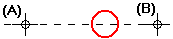

Rotate a drawing view
-
Choose the Rotate command
 .
. -
Select the drawing view you want to rotate.
-
Click where you want the center of rotation to be (A).
The software dynamically displays a reference axis for the rotation.

-
Click to define the other end of the reference axis.
Tip:The location and position of the reference axis defines the rotation from point (B).
-
As you move the mouse, the software dynamically displays the rotation axis and drawing elements being rotated. When rotated into the position you want them, click to define the rotation to point (C).

-
Instead of clicking to define the orientation of the reference axis, you can use the Position Angle box on the command bar.
-
Instead of clicking to define the to point, you can use the Rotation Angle box on the command bar. You can then click to define the side of the reference axis you want to rotate toward, or type a value in the Position Angle box.
-
To rotate by increments, type a value in the Step Angle box on the command bar.
-
You can use IntelliSketch to define the rotation from and to points.
-
You can rotate multiple selected views, including detail views, in a single Rotate operation. When aligned views are rotated, they become unaligned.
-
You can use other view manipulation commands, such as Zoom and Pan, while you are using the Rotate command.
When you finish manipulating the view, the software returns you to the Rotate command at the point where you left off.
How do I
Change drawing view orientationChange the display in a part view
Shade a drawing view
Fit a drawing view
Activate or inactivate drawing views
Bring a dimension, annotation, or text box to the front
Send a Dimension, Annotation, or Text Box to the Back
Change drawing text size
Learn more
Drawing view manipulationLook up more details
Drawing View Selection command barFit Drawing View command
Inactivate Drawing Views command
Activate Drawing Views command
Bring to Front command
Send to Back command
Quick links
Using the View WizardDrawing view types
Drawing view styles